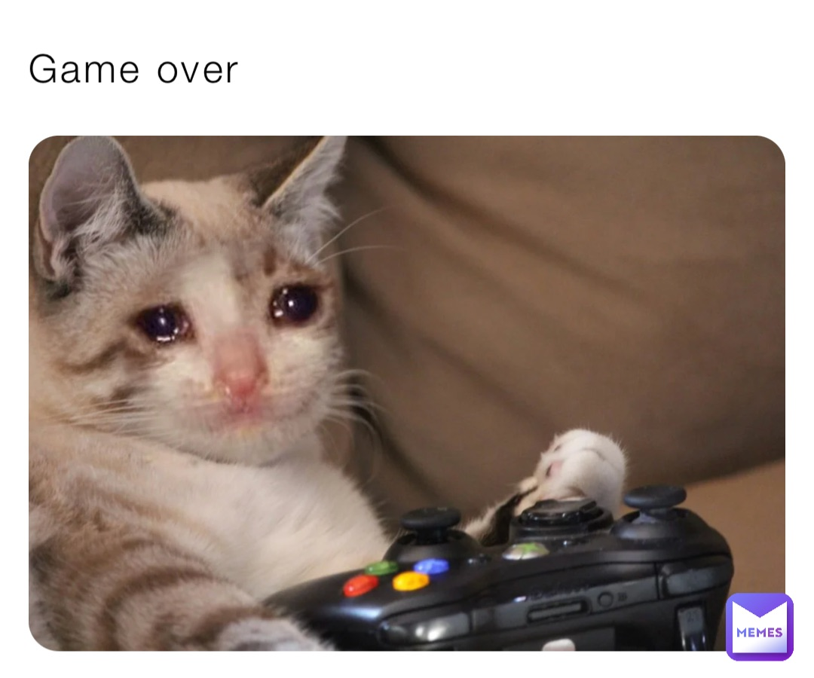

Você começa em sua aldeia pertencente a igreja , onde enconta um antigo baralho que pode tirar horas da vida de um dos jogadores.Com um poder tão grande em mãos, você deve decidir se usará o baralho ou não, a utilizacão do mesmo poderá trazer consequências
Você encontra as regras do baralho, e lê para saber como utilizar, e dentro do baralho a uma carta em branco, escrita uma frase em uma lingua desconhecida por você.
Você decide levar para casa e mostrar para seu colega de quarto, e o mesmo fala para entregar para a igreja o baralho
Ao levar a carta para a biblioteca e compara a escrita com algumas linguagens você descobre o que estava escrito na carta.
Você decide levar o baralho para jogar com seus amigo, mas acaba sendo atropelado pelo padre e morre.
Ao não levar o baralho a igreja você decide abrir, acha uma carta branca e procura o que está escrito nela.
A igreja pega o baralho e decide tacar fogo, por a mesma mencionar a morte de alguém.
"In unoquoque ludo lusit, victor eligit aliquem ut horas e vita alicuius capiat, in casu paritatis quilibet lusor 30 minutas amittit". “Em cada jogo disputado, o vencedor escolhe alguém para tirar horas da vida de alguém, em caso de empate cada jogador perde 30 minutos.” *Escolher o tempo de vida retirado em 50 segundos
END GAME
Ao tentar jogar percebe que as cartas têm efeitos alterados. Em vez de competir contra outros jogadores, você deve lidar com cartas que manipulam seu próprio destino. Por exemplo, uma carta pode q fazer reviver eventos dolorosos do passado ou enfrentar visões de possíveis futuros catastróficos
Você decide chamar seu colega de quarto para jogar, mas sem contar a verdadeira regra
Você tenta parar de jogar mas começa a sentir uma dor no peito e morre de ataque cardiaco
Durante o jogo você começa a perde e seu amigo pergunta o pq de voce está tao nervoso, você assite seu amigo retirar a carta branca de seu baralho e pergunta o que a mesma faz.
Você conta a utilidade e diz ao mesmo que não tem como parar o jogo com dois jogadores antes de um vencer, ou os dois morrem.
Seu amigo demora a decidir se joga ou não a Carta e sua demora ocasiona, ambas as mortes.
Vocês brigam ao terminar o jogo, vc n se importa tanto em perder esse tempo da usa vida acreditando que não fará diferença.
Se passaram 48h desde que você e seu amigo jogaram, seu amigo decide ir conversar com você, mas escontra seu corpo morto na rua.
Você estava em coma, e sonhou com tudo isso!